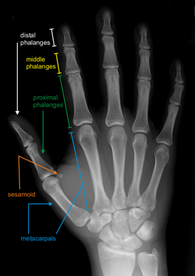
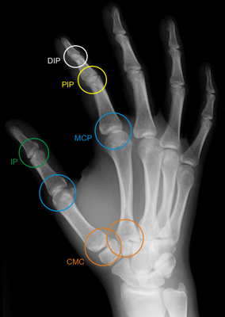
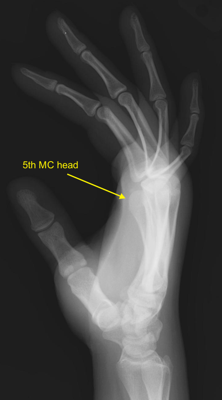
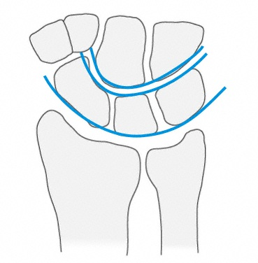

Imaging
Radiographs
- PA, oblique and lateral views of the wrist are standard examinations for an unknown wrist injury

Normal PA hand

Normal oblique hand

Normal lateral hand
- Carpal tunnel view: full wrist extension, volar wrist on plate, beam angled 40° from horizontal
- Useful for pisiform, trapezium and hamate fractures
- Normal alignment:
- Capitolunate angle (lateral): 0°
- Scapholunate angle (lateral): 45°
 Scapholunate angle
Scapholunate angle
- Scapholunate space (AP): < 2 mm
- Radiolunate angle (lateral): 0°
- Gilula's lines (AP): three arcs outlining the radiocarpal, proximal midcarpal and distal midcarpal joints should be
concentric
- Lack of concentricity suggests instability and disruption of normal carpal relationships

Gilula's lines
- CT: identify occult fractures and further characterize fracture pattern
- MRI: identify vascular changes and ligamentous disruption
- Gadolinium enhancement provides more accurate vascularity assessment
Scaphoid
- PA: scapholunate space > 2 mm implies scapholunate ligament disruption (Terry Thomas sign)
- Lateral: may reveal dorsal intercalated segment instability (DISI) deformity:
- Scapholunate angle > 70°
- Radiolunate angle > 10° extension
- Scaphoid series: in addition to lateral and oblique views
- PA wrist in ulnar deviation: scaphoid extends with ulnar deviation, provides a better en faceview
- Scaphoid view: PA with beam angled 20°-30° from perpendicular with wrist in ulnar deviation produces a true en
faceview
- CT: most sensitive and specific modality for fracture
Lunate
- Nondisplaced fractures can be difficult to diagnose acutely on plain film due to overlapping structures
- Bone scan: usually positive within 24 hours of injury
- CT provides best fracture detail
Triquetrum
- Scaphoid series may allow identification of fractures
- Oblique pronated lateral view: provides better visualization of dorsal fractures
Pisiform
- Lateral in forearm supination to 45°: visualizes pisotriquetral joint
- Carpal tunnel view: visualizes pisotriquetral joint
Trapezium
- Robert view: taken with the hand in maximum pronation
- True AP of first carpometacarpal (CMC) joint
- Carpal tunnel view: visualizes dorsal ridge fractures
- Scaphoid series generally visualizes fractures
Trapezoid
- PA: Fracture suggested by loss of normal CMC relationship, increased overlap with trapezium or capitate, proximal
displacement of the 2nd MC
Capitate
- Scaphoid series generally visualizes fractures
Hamate
- Carpal tunnel view: visualizes hook fractures